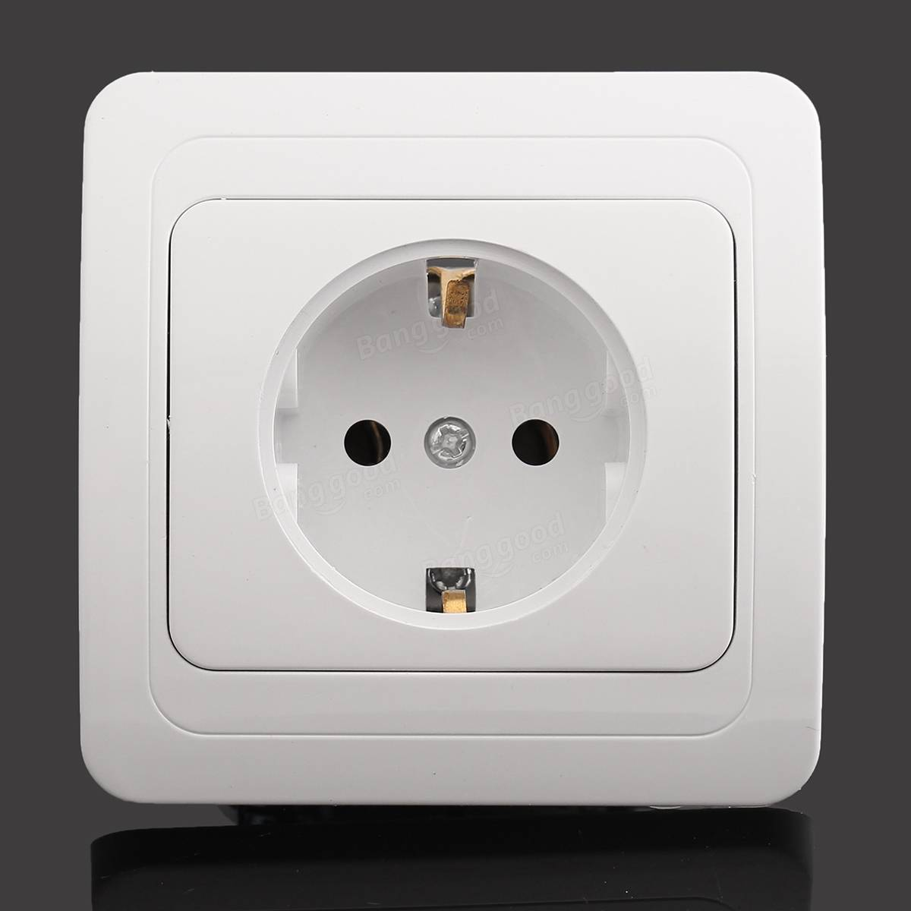

Observations From a Week in Europe
I’ve spent a week traveling through the Netherlands, Belgium, and France. I wrote this mostly about the little conveniences/inconveniences I’ve faced.
- The euro is accepted everywhere (at least in the Schengen area). You can withdraw cash once and use it in multiple countries.
- There is practically no immigration from one Schengen country to another which kind of blows my mind. In some countries you have to let the local authorities know you’ve arrived but it’s as easy as walking over the border. I took a train from Brugge, Belgium to Paris, France and walked out of the station. That was it as far as border control goes.
- The convenience of the above two points is severely underestimated sometimes. I feel like this is one of the big advantages of the Eurozone.
- Barely anyone in Amsterdam uses digital payments. It seems to be worse even than the acceptance in India (which may have changed now). Debit with PIN is used in a lot of places (apparently even that has exceptions) but you’re hard pressed to find credit card acceptance. AmEx acceptance is worse, but this is true for most Western European countries from what I’ve heard. I was able to use AmEx in places that were accustomed to heavy tourist traffic like hotels, tourist spots, and Pancakes Amsterdam(!!). France and Belgium were better with card acceptance.
- Traveling in Western Europe is ridiculously convenient without having much of it planned out in advance. In fact, I’d suggest to not plan out everything (have a general idea) because we found a bunch of better/cheaper alternatives in our travels (as opposed to Google Maps) by asking people/ticket offices. As long as your itinerary is flexible by a few hours, you’ll be fine.
- Trains and stations all have free WiFi but weirdly don’t have a lot of power outlets. The only exception to this was the first class train we took from Lille to Paris.
- My phone (Google Pixel) broke during travel and the person who broke it offered to pay for the repairs. Unfortunately, the Pixel, which happens to be Google’s flagship phone, seems to not be recognized anywhere outside the US. I went to three shops in France on day one and multiple others on day two and no one could fix my broken Pixel glass. On the other hand, a guy told me that he could fix the iPhone 7 screen in a few hours. I’m getting a little tired of defending Pixel.
- Regardless of your thoughts on the iPhone, I’ve realized Apple is successful in some ways because they make only one kind of a thing. If you like to be different from the crowd, this sucks, but the power of ubiquity that Apple has is such that no one knew what the heck I was holding in my hand since it wasn’t an iPhone.
- Another point on above - USB-C is not as ubiquitous as I’d assumed. You can get spare cables for Apple’s lightning connector at random outlets anywhere but it’s not the same for USB-C. A lot of airports still sell micro-USB cables and you would have to have an adapter for those.
- Designer stores and mass-market labels are literally the same everywhere. Also all fashion seems to just copy itself. You’ll find the same exact shoes in Zara and H&M but with different price/label tags of course. Hard to tell where the trend starts.
- European outlets look ugly imo 